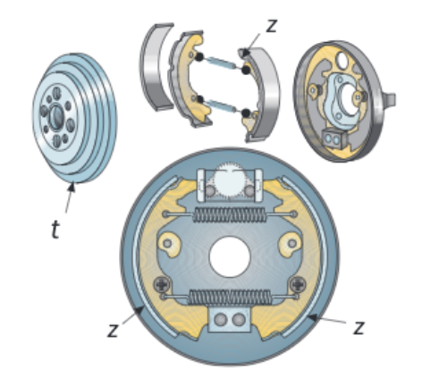
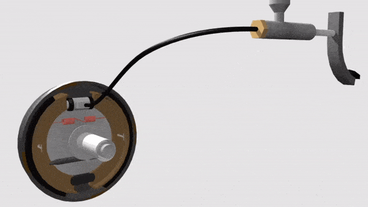
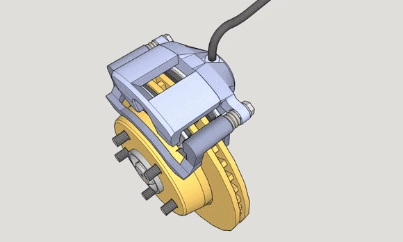

Se denominan elementos disipadores de energía a los que tienen la misión de reducir o parar el movimiento de uno o varios elementos mecánicos cuando sea necesario.
En la práctica se emplean para detener elementos mecánicos que giran, transformando su energía cinética (mecánica) en energía calorífica (térmica) por medio de fricción entre dos piezas. A estos elementos se les conoce con el nombre de frenos. Según el tipo de accionamiento, podemos distinguir entre frenos mecánicos y frenos eléctricos.
Frenos mecánicos
Los frenos mecánicos pueden accionarse mediante cables o varillas, como es el caso de las bicicletas, o bien mediante un fluido (sistema hidráulico). En este caso se tienen unas tuberías o canalizaciones que contienen un líquido (líquido de frenos). Constan también de un émbolo pequeño accionado por el pedal del vehículo, y otro émbolo de mayor diámetro en las pastillas o las zapatas (dependiendo del tipo de freno). Su funcionamiento se basa en el principio de Pascal, que permite multiplicar mucho la fuerza que ejercemos nosotros (se ve con detalle en 2.º de Bachillerato, al estudiar hidráulica). Es el sistema que emplean casi todos los vehículos.
Dependiendo de los elementos que friccionan, los tipos de frenos mecánicos mas importantes son de zapata, de tambor o de disco:
De zapata
La fricción se origina sobre la periferia de un disco solidario a un árbol. La pieza que roza contra el disco (zapata) está recubierta de un material con alto coeficiente de rozamiento. Este sistema es muy utilizado en máquinas industriales.
En la figura vemos dos tipos de frenos de zapata exterior. El primero tiene una zapata circular que se cierra sobre el disco que gira, provocando así la fricción. En el segundo caso la zapata es una pieza que se aprieta directamente sobre el borde del disco:

De tambor
El rozamiento se produce en la parte interna de un cilindro. Consta de una pieza que gira, denominada tambor (t), fija a la rueda, y de otras piezas fijas al chasis o a la estructura del vehículo. Para reducir la velocidad del tambor se aproximan las zapatas (z), para que rocen contra este.

Aquí puedes ver un ejemplo de freno de tambor con accionamiento hidráulico:

De disco
Constan de un disco (d) colocado en el árbol de giro y dos piezas (p), denominadas pastillas, que se presionan sobre ambas caras del disco para reducir su movimiento. Este tipo de frenos es de los más utilizados en automóviles y motocicletas por su alto rendimiento.

Frenos eléctricos
Están formados por un disco de aluminio o cobre que gira entre dos polos fijos de un electroimán. Si se hace pasar la corriente eléctrica por el electroimán, se inducen corrientes eléctricas parásitas en el disco que generan un campo magnético que atrae al del electroimán. Como este permanece detenido, el disco se frena.
En este tipo de frenos se transforma la energía cinética en energía eléctrica, que a su vez se transforma en energía magnética. Se produce también un calentamiento del disco por efecto Jouleal aparecer las corrientes eléctricas, pero tiene menor impacto que el que se produciría directamente mediante rozamiento porque se da en toda la masa del disco a la vez y no solo en la superficie.
Este tipo de freno se emplea en camiones o vehículos pesados cuando realizan descensos prolongados para evitar el sobrecalentamiento de los frenos mecánicos.
Frenado regenerativo
En los vehículos eléctricos o híbridos (que tienen un motor térmico y otro eléctrico) se puede frenar transformando la energía cinética directamente en energía eléctrica, aprovechando que un motor eléctrico puede funcionar también como un generador. De esta forma, en las frenadas generamos energía eléctrica que puede almacenarse en la batería y ser utilizada después cuando el motor eléctrico tenga que impulsar de nuevo al vehículo.
Esto es lo que se conoce como frenado regenerativo y, además de ser mucho mas eficiente que el mecánico, no produce desgaste al no haber nada que produzca rozamiento. Esto permite que los vehículos eléctricos gasten mucho menos frenos que los vehículos convencionales térmicos, pues solo usan el sistema mecánico de frenado en ocasiones puntuales (frenadas de emergencia o detención completa del vehículo).
Cálculos en la frenada
Nos centraremos en calcular parámetros de los frenos mecánicos, no los eléctricos. Cuando la máquina o vehículo frena, la energía cinética (EC)debe ser disipada en forma de calor (QD, calor disipado) por las pastillas de freno o las zapatas.
La energía cinética del disco sobre el que actúan las pastillas o las zapatas tiene la misma expresión que ya vimos para el volante de inercia:
\[E_{C}=\frac{1}{2}\cdot I\cdot \omega ^{2}\]
Donde:
- EC:energía cinética del disco, en julios (J)
- I: momento de inercia del disco, en kilogramos-metro cuadrado (kg·m2)
- ω: velocidad angular del disco, en radianes por segundo (rad/s)
Al tener el disco de frenado la misma forma cilíndrica del volante, también nos sirve su misma expresión del momento de inercia:
\[I=\frac{1}{2}\cdot m\cdot r ^{2}\]
Donde:
- I: momento de inercia del disco, en kilogramos-metro cuadrado (kg·m2)
- m:masa del disco, en kilogramos (kg)
- r:radio del disco, en metros (m)
Para calcular el calor disipado por las pastillas o las zapatas, aplicaremos la siguiente fórmula:
\[Q_{D}=\mu \cdot F\cdot \pi \cdot D\cdot n'\]
Donde:
- QD: calor disipado en la frenada, en julios (J)
- μ: coeficiente de rozamiento entre la zapata (o pastilla) y el disco
- F: fuerza aplicada por la zapata (o pastilla) contra el disco, en newtons (N)
- D: diámetro del disco (zapatas) o de la zona de frenado (pastillas), en metros (m)
- n': número de vueltas dadas por el disco durante la frenada
Durante una frenada, la velocidad de giro del disco pasará de una velocidad inicial (ωINI) mayor a otra final (ωFIN) menor, con lo que su energía cinética habrá disminuido. Esa disminución será justamente lo que se ha disipado en forma de calor, por lo tanto, tendremos que:
\[Q_{D}=E_{C\ INI}-E_{C\ FIN}\]
o, lo que es lo mismo:
\[\mu \cdot F\cdot \pi \cdot D\cdot n'=\frac{1}{2}\cdot I\cdot (\omega^{2} _{INI}-\omega^{2} _{FIN})\]
Cuenta las superficies que rozan. La fórmula anterior está escrita para una sola superficie de rozamiento. Pero un freno de disco tiene dos pastillas, una a cada cara del disco, y un freno de tambor, dos zapatas. Si hay z superficies apretando con la misma fuerza F, el calor disipado es z veces mayor:
\[Q_{D}=z\cdot \mu \cdot F\cdot \pi \cdot D\cdot n'\]
Donde z es el número de zapatas o pastillas que rozan (z = 1 en un freno de una sola zapata; z = 2 en un freno de disco corriente o en uno de tambor). Antes de calcular, lee el enunciado y cuéntalas: olvidar el z = 2 duplica el número de vueltas que te sale.
Potencia disipada en la frenada
Saber cuánta energía se convierte en calor no basta: importa en cuánto tiempo. No es lo mismo soltar 1000 julios en diez segundos que en medio segundo; en el segundo caso el freno se calienta muchísimo más. Esa rapidez es la potencia:
\[P=\frac{Q_{D}}{t}\]
Donde:
- P: potencia media disipada, en vatios (W)
- QD: calor disipado durante la frenada, en julios (J)
- t: tiempo que dura la frenada, en segundos (s)
Un vatio es un julio por segundo, así que el tiempo tiene que ir en segundos. Esta es la magnitud que decide el tamaño de un freno: los discos de un camión son enormes no porque haga falta más fuerza, sino porque tienen que evacuar mucha más potencia calorífica sin fundirse.
Ejercicio resuelto: frenar un disco con dos pastillas
Un disco macizo de 36 cm de diámetro y 8 kg de masa gira a 1400 rpm. Para detenerlo se usa un freno de disco con dos pastillas, una a cada cara, que aprietan con una fuerza normal de 220 N cada una. El coeficiente de rozamiento pastilla-disco es μ = 0,35.
a) Momento de inercia y energía cinética. b) Vueltas que da el disco hasta pararse. c) Tiempo que dura la frenada, si la deceleración es uniforme. d) Potencia media disipada en forma de calor.
Ver la resolución paso a paso
Paso 1. La energía que hay que disipar es toda la que tiene el disco.
Como acaba parado, su energía cinética final es cero: hay que convertir en calor absolutamente toda la que tenía.
I = ½ · 8 · 0,18² = 0,1296 kg·m²; ω = (2π · 1400) / 60 = 146,61 rad/s; EC = ½ · 0,1296 · 146,61² = 1392,8 J.
Paso 2. Cuenta las superficies que rozan. Aquí son DOS.
Este es el paso que más se falla. La fórmula del calor disipado está escrita para una superficie de rozamiento, y un freno de disco tiene dos pastillas apretando, una por cada cara. Hay que contarlas:
\[Q_{D}=z\cdot \mu \cdot F\cdot \pi \cdot D\cdot n'\]
con z = 2. Si se olvida el 2, salen el doble de vueltas: el disco parecería tardar el doble en pararse.
Paso 3. Vueltas hasta pararse y tiempo de frenado.
Igualamos el calor disipado a la energía que había que quitar, con el diámetro en metros:
\[n'=\frac{E_{C}}{z\cdot \mu \cdot F\cdot \pi \cdot D}\]
Sustituyendo: n' = 1392,8 / (2 · 0,35 · 220 · π · 0,36) = 8 vueltas. Con deceleración uniforme, el disco tarda lo mismo que si girase todo el rato a la velocidad media (la mitad de la inicial): 700 rpm = 11,667 vueltas/s, así que t = n'/11,667 = 0,6857 s.
Paso 4. Potencia media disipada.
La potencia es energía entre tiempo. No hace falta ninguna fórmula nueva de mecanismos:
\[P=\frac{E_{C}}{t}\]
Sustituyendo: P = 1392,8 / 0,6857 = 2 031,2 W.
Más de dos mil vatios convertidos en calor en la superficie de las pastillas: mucho más de lo que parecía con el dato de tiempo anterior. Por eso los frenos se calientan tanto, y por eso un freno pequeño no sirve para un vehículo grande aunque «apriete» igual.
Resultados: I = 0,1296 kg·m²; EC = 1392,8 J; 8 vueltas; t = 0,6857 s; P = 2 031,2 W.
Ejercicios de frenos
Test
Frenos. La idea de fondo es simple —toda la energía cinética acaba convertida en calor— pero hay que contar bien las superficies que rozan y no confundir el calor total con la rapidez con que se produce.